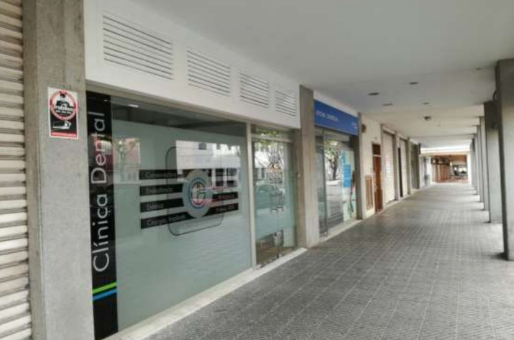
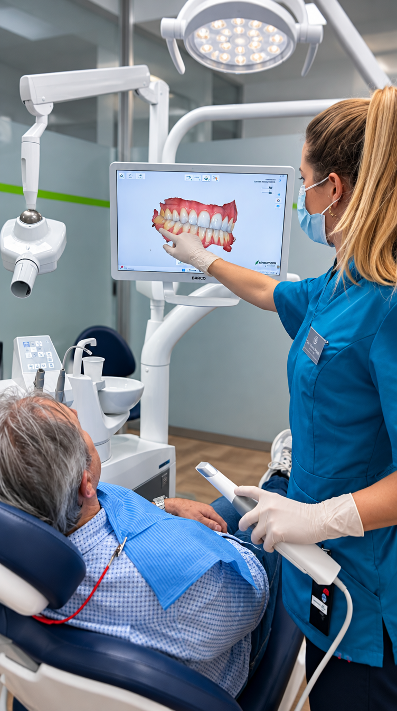
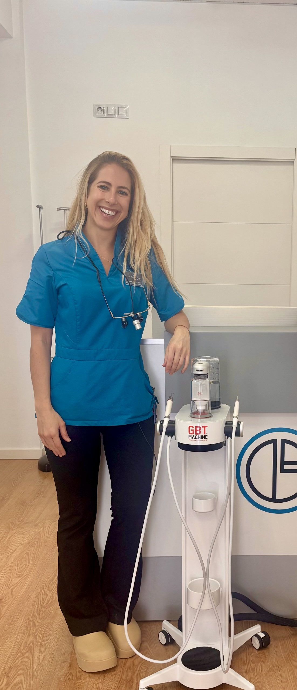
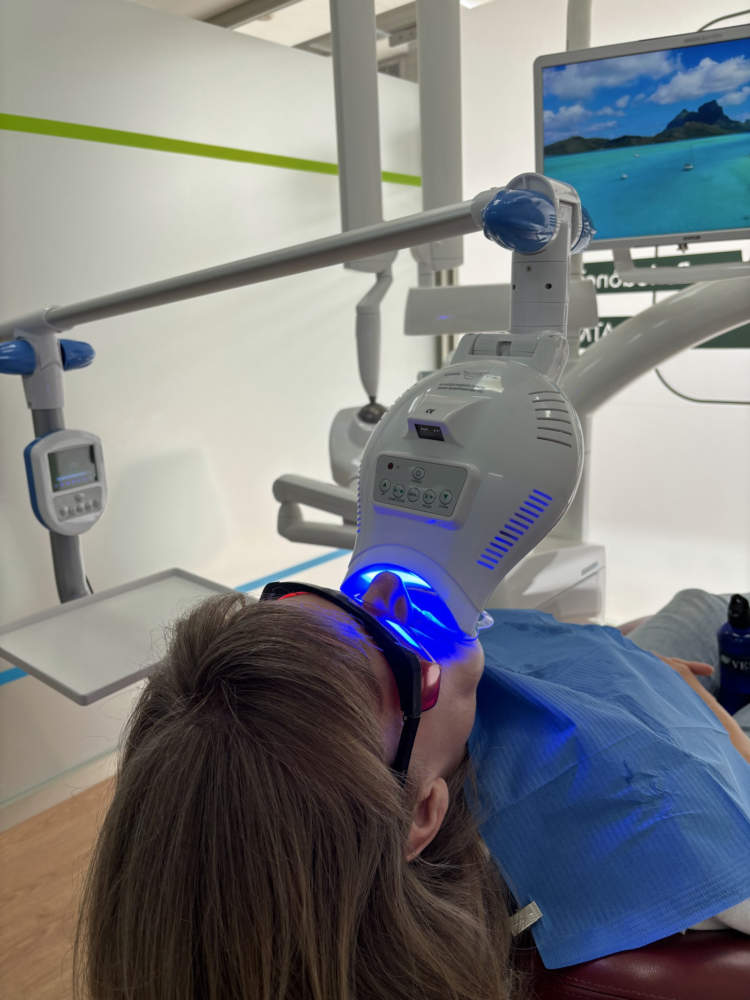
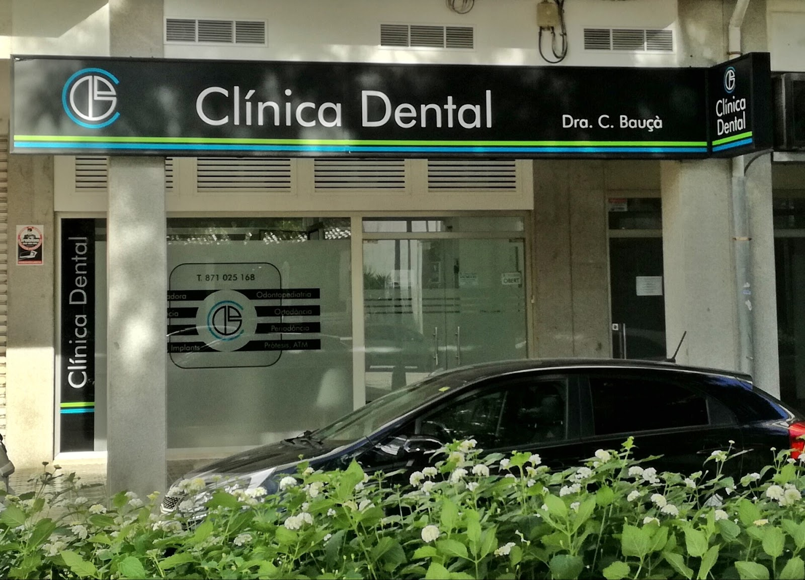

La Dra. Catiana Bauçà porta anys atenent famílies d'Inca a una clínica petita, a peu de carrer. Temps per explicar-t'ho tot, tecnologia per ensenyar-te la teva pròpia boca i molta paciència amb qui hi arriba espantat.
Som a la planta baixa d'un dels porxos de l'Avinguda Gran Via de Colom, al centre d'Inca. No és una franquícia ni un centre de pas: la majoria de pacients fa anys que hi vénen, sovint tota la família.
Cada visita comença explicant què passa i per què, amb l'escàner a la mà si cal. Ningú es queda amb dubtes ni signa res sense entendre-ho.
«Sin duda mi clínica dental de confianza. Superados mis miedos gracias a todo el personal, todo el proceso de reconstrucción de mi boca esta siendo increíble. Trato cercano y profesional.»

Tot el que es fa a la clínica, sense derivar-te a tercers tret que calgui.
Càries, empastaments i reconstruccions. Salvar la dent pròpia sempre que sigui possible.
Tractament de conductes quan el nervi està afectat, amb anestèsia ben posada i sense presses.
Genives que sagnen, retracció i manteniment. Inclou neteges amb GBT per a boques sensibles.
Primeres visites, revisions i segellats. L'objectiu és que el nen surti volent tornar.
Correcció de la mossegada en infants i adults, amb estudi previ i seguiment a la mateixa clínica.
Blanquejament i restauracions estètiques, sempre partint del que és sa i possible.
Extraccions, implants i reconstruccions completes, planificades amb escàner 3D.
Pròtesis fixes i removibles, i tractament del bruxisme i dolor de l'articulació.
Tres coses que canvien com se sent una visita.

Sense pasta ni motlles. En cinc minuts veus la teva boca a la pantalla i entens què t'estem explicant.

Pols fina i aigua tèbia en lloc de raspar. Pensada per a qui té molta sensibilitat i defuig les neteges.

Una sola sessió a la clínica, amb làmpada LED i control del to. Sense fèrules per fer a casa durant setmanes.
«Llevo más de 6 años siendo clienta y para mí la mejor dentista que he podido ir en mis 36 años! Atenta, perfeccionista y el mejor trato que me han dado!»
«Es una persona muy cercana y realmente preocupada por el bienestar del paciente… algo a lo que se le llama vocación.»
«Hace muchos años que voy y el trato siempre es genial. Además, ahora a traído una equipo para hacer limpiezas que va genial para la gente con mucha sensibilidad.»
Mitjana de 4,8 sobre 68 ressenyes a Google.
Ho agafem nosaltres mateixos al telèfon. Si prefereixes escriure, el WhatsApp és el mateix número i responem entre pacients.

Sota els porxos, a peu pla. Hi ha zona blava al carrer i aparcament públic a dos minuts.
places-10 (blanquejament) — encara és la foto més fluixa de la pàgina.places-05 (màquina GBT): està desenfocada i mal enquadrada.